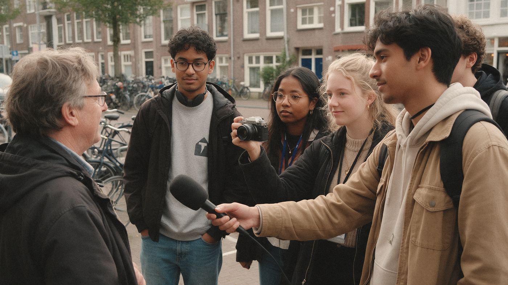

Home › Opleidingen › Communicatie & journalistiek › Communicatie

Wat is Communicatie?
Internationale naam: Communication
Communicatie is een opleiding op hbo en associate degree in de groep Communicatie & journalistiek. Verhalen en boodschappen bedenken, schrijven en verspreiden.
Wat kun je ermee?
- Communicatieadviseur of woordvoerder
- Journalist of redacteur
- Contentmaker (maker van online teksten, foto's en video's) of social media-specialist
- Marketingcommunicatie
Wat heb je ervoor nodig?
- Voor hbo: havo, vwo of mbo-4
- Voor associate degree: havo, vwo of mbo-4
- Meestal geen vast profiel. Bij journalistiek is vaak een selectie of schrijfopdracht.
- Het helpt als je: Goed schrijven, Nieuwsgierig en snel werken, Makkelijk contact maken
Selectie of toelatingsexamen?
Meestal niet. Heb je de juiste vooropleiding en meld je je op tijd aan, dan mag je in principe beginnen.
Hoe lang duurt het?
hbo: 4 jaar · associate degree: 2 jaar. Je kunt het volgen als deeltijd (naast je werk), duaal (werk en studie afwisselen) en voltijd.
Waar kun je Communicatie studeren?
Bij 16 scholen, onder andere in 'S-Gravenhage, 'S-Hertogenbosch, Almere, Amsterdam, Arnhem, Breda, Drachten, Ede Gld, Eindhoven, Enschede, Groningen en Hengelo Ov:
- Avans Hogeschool
- Christelijke Hogeschool Ede
- Christelijke Hogeschool Windesheim
- De Haagse Hogeschool
- Fontys Hogeschool
- HZ University of Applied Sciences
- Hanzehogeschool Groningen
- Hogeschool Inholland
- Hogeschool Leiden
- Hogeschool NCOI
- Hogeschool Rotterdam
- Hogeschool Utrecht
- Hogeschool van Amsterdam
- Hogeschool van Arnhem en Nijmegen
- NHL Stenden Hogeschool
- Tio
Verwante opleidingen
- Journalistiek
- Online Contentcreator
- Crossmediale Communicatie
- Communicatie- en Informatiewetenschappen
- Communicatiewetenschap
- Communicatie en Life Sciences
- International Bachelor's Programme in Communication and Media
- Media en informatie
Past Communicatie bij jou? In de app zie je hoe ver elke school van je huis is, wanneer de open dagen zijn en wat je Plan B is. Je kunt hem ook op je lijst zetten.
Bekijk in de appDoe de Padvinder